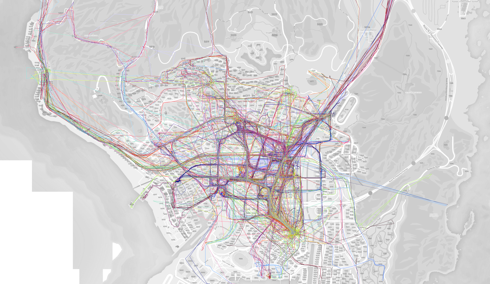
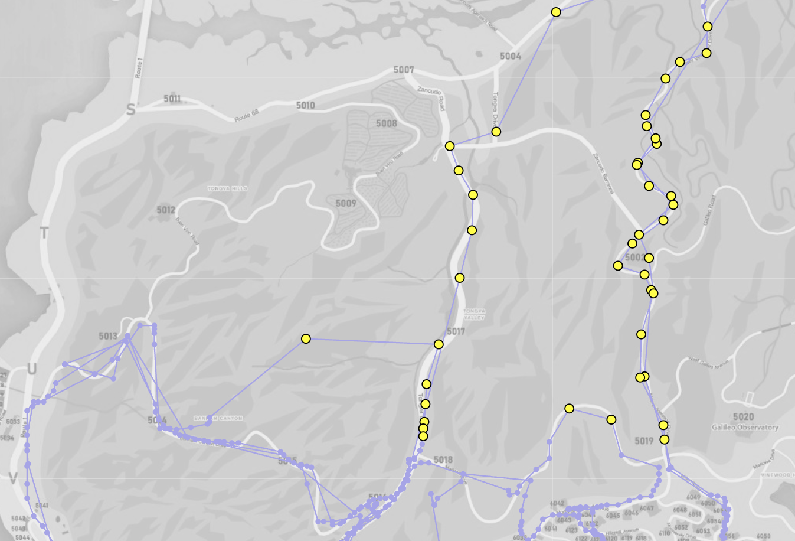
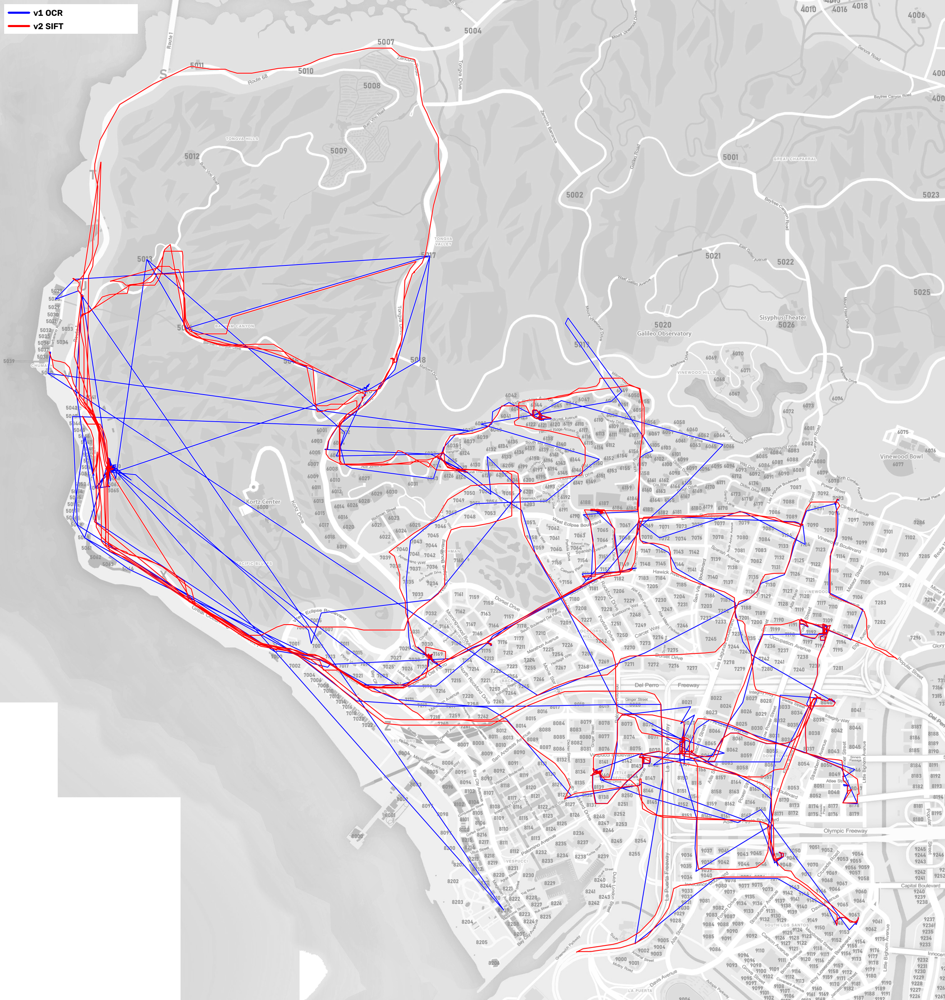

ホロGTAホロメンMAP つくった！

思案とはづくでholoGTAホロメンMAPというウェブサイトを作ってみました。にじGTAライバーMAPのホロGTAバージョンが見当たらなかったので作った次第です。大体はそのサイトにある方法で始めましたが、アルゴリズムは別のものになりました。
使い方
再生ボタンを押すと実際の時間で、早送りを押すと1分を1秒で再生します。
動画を選ぶか、マップ上の線をクリックすると、その時点の動画を再生できます。2窓まで同時視聴できます。
ホロメン選択の役職を押すと、それそれの役職を同じ色にして表示します。
作り方
自環境以外でテストしていないので、一旦1本の動画を処理可能か試してください。大体1時間以内でおわります。
ideoavesGTA-Mappingに詳しい方法が記載されています。
基本的には自動化できていますが、微調整は必要なため、そのツール（edit.py）も一緒になっています。

手作業で道を揃える作業中。ただ進んでいるわけではなく時々事故したりしていて面白いです。山間部の直線はただ進んでいるわけではなく、時々事故したりしていて面白いです。
よくあった修正は/hoten、カーショップから飛行場・家の外から中へのワープ、ヘリコプターでの搬送でした。これらは判定しようとすると他の通常の経路が消えてしまうため手作業が良いです。
メイキング
一連の流れ
まず基準を2秒とし、左下のMAPの状態を把握します。このときMAPの表示の有無とともに、車に乗っているか否かを同時に判定します（10m/s超過をとりあえず入れています）。徒歩ならば大きく動かないため10秒を基準にします。
探索範囲は前回のポイントから600m四方と適当な速度*経過時間で、6点以上の特徴点があれば採用します。
経過時間が1分を超えた場合は地図全体を走査します。
最後にビジュアライズ時の処理として、前後10秒間の中央値の算出（同じ場所で回っているとトゲトゲの固まりができるなど、可視化に致命的な要素がある）、複数候補からの最近点の選択、一定距離内の停止時10秒間への間引き（とくに停車時に2秒ずつ同じ箇所に点を打ち続けてしまう問題への対処）をおこないます。これでできたjsonをhtml上で表示します。
SIFTによる探索
特定方法を探り、かなり手頃な方法が見つかりました。
にじGTAライバーMAPの技術的な話をアイデアベースにしてEasyOCR、PP-OCR v6 smallを試していましたが、時間的なコストの問題でPostal Code Map & Minimap - New & Improved - v1.3を使ったSIFT（特徴点による探索）をおこないました。すると予想より大幅に時間・精度ともに改善がありました。
とくに番地の少ない山間部の特定の問題が解消され、これにより特に山間部での追跡が容易になりました。

例：百鬼あやめの経路描画の比較。赤線がSIFT。山間部、中間部の採用ポイントが非常に増えている。都心部も精度が良い。
データ
以下は3〜7日目（192本）の平均値です（最終版のデータのあるものを抽出しています）。
| 項目 | 平均 |
|---|---|
| 動画の長さ | 331分 |
| 時間 | 17分46秒（1枚0.21秒） |
| MAP画像 | 9941枚 |
| 照合合計 | 約5025枚（51%） |
| 位置取得 | 3737枚（74%） |
| 採用 | 2312点 |
1本5-6時間の動画の処理におよそ20分かかっており、また位置取得のポイントも想定より高い値でした。
また動画全体から取得できたのは以下の割合でした。平均して50%以上の取得があり、間は殆ど予想経路が直線であることを考えると、手作業での調整はほぼいらないでしょう。
| 場所 | v1 OCR | v2 SIFT |
|---|---|---|
| 都心 | 72.06% | 87.47% |
| その間（町・郊外の道） | 34.76% | 75.40% |
| 山・郊外 | 0.11% | 40.67% |
| 全体 | 70.85% | 86.45% |
時間測定
動画の開始時刻が実際のサーバー内時間であることは遅延によってありえません。そこで、左上の時間表示をOCRして切り替わった瞬間を記録します。これは2秒ごとの撮影を基準にしているので誤差が2秒以内ですが、時間表示の上にロゴや配信枠装飾が隠れる場合があります。またOCRも完璧ではありません。
そこでサーバー全体に流れる終了時刻のアナウンスも利用しています。これは画面中央上に表示され、かつ比較的大きいため被る心配がありませんが、サーバー終了前に参加している必要があります。この２種で時間差を特定しています。
動画
今回利用した動画は279本で、合計約81時間で一通りの作業が終わりました。またダウンロードの処理を含むと、大体5日程度かかったでしょう。
一覧はVideo_credit.mdにあります。
正直なところ、ここが一番大変でした。